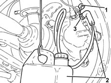
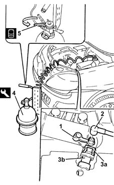
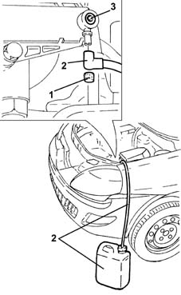
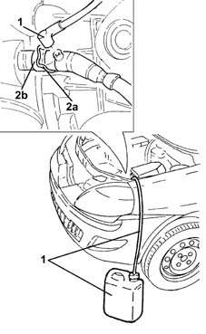
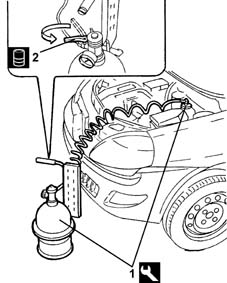

0010T62 BRAKE and/or CLUTCH FLUID - Replace. fluid - Includes. washing pipes and bleeding air
- Path
- Procedures > 00 MAINTENANCE > 0010 NEW UNITS AND PLANNED MAINTENANCE'. > 0010T vehicle oil and fluids > 0010T62 BRAKE and/or CLUTCH FLUID - Replace. fluid - Includes. washing pipes and bleeding air
- Kind
- repair procedure (removal / refitting; the operation number is the code)
- Applies to
- all engines; all production periods
- Interactive page
- https://sloeber94.github.io/elrnDB-lYpsln/en/#/2428828
Applies to: engines: 1.2 8v, 1.2 16v, 1.4 16v; all production periods
Position the vehicle on the ramp.
1. Remove the protective cap on the brake caliper bleed valve.
2. Connect the collection system (pipe and reservoir) to the bleed valve on the brake caliper.
3. Open the bleed valve on the brake caliper.
Operate the brake pedal until all the fluid has come out.
Repeat the above operations for the other brake caliper and the two rear brake cylinders.
Applies to: engines: 1.3 JTD; all production periods
Position the vehicle on the ramp.
1. Remove the protective cap on the brake caliper bleed valve.
2. Connect the collection system (pipe and reservoir) to the bleed valve on the brake caliper.
3. Open the bleed valve on the brake caliper.
Operate the brake pedal until all the fluid has come out.
Repeat the above operations for the other brake caliper and the two rear brake cylinders.

Applies to: engines: 1.2 8v, 1.2 16v, 1.4 16v; all production periods
Proceed with removal 5530B10 battery - r+r .
Proceed with removal 5530B52 Battery DRIP TRAY/SUPPORT - R.R. .
Applies to: engines: 1.3 JTD; all production periods
Proceed with removal 5530B10 battery - r+r .
Proceed with removal 5530B52 Battery DRIP TRAY/SUPPORT - R.R. .
1. Remove the cap on the bleed valve.
2. Connect the collection system (pipe and reservoir) to the bleed valve on the master cylinder.
3. Lift the retaining clip (3a) until the first click is heard and remove the pipe (3b) sufficiently to uncover the bleed hole.
4. Connect the tool to the brake-clutch fluid reservoir.
 | Name | Country |
|---|---|---|
4 | Anti-pollution | 1.806.097.000 |
5. Slowly open the cock on the reservoir of the device and fill the brake-clutch systems with the specified fluid.
 | Type | Component | Name | Qty. |
|---|---|---|---|---|
5 | Synthetic fluid | BRAKE-CLUTCH HYDRAULIC SYSTEM | TUTELA TOP 4 | - |

Applies to: engines: 1.2 8v; all production periods
1. Remove the cap on the bleed valve.
2. Connect the collection system (pipe and reservoir) to the bleed valve on the master cylinder.
3. Loosen the bleed screw and let the hydraulic clutch system drain completely.

Applies to: engines: 1.3 JTD; all production periods
Wait until the air contained in the hydraulic brake-clutch systems has fully emerged.
Close the bleed valves on the brake calipers/rear wheel cylinders and fit the protective caps.
Fit the pipe fully home in its seat on the clutch operating cylinder and secure with the retaining clip.
Remove the fluid collection devices.
Place the cap in its housing on the bleed valve.
Remove the equipment.
| Name | Country |
|---|---|---|
- | Anti-pollution | 1.806.097.000 |
Proceed with refitting 5530B52 Battery DRIP TRAY/SUPPORT - R.R. .
Proceed with refitting 5530B10 battery - r+r .
Remove the car from the ramps.
Check the efficiency of clutch release, gear engagement and the braking system.
Applies to: engines: 1.2 16v, 1.4 16v; all production periods
Remove the cap on the bleed valve.
1. Connect the collection system (pipe and reservoir) to the bleed valve on the clutch operating cylinder.
2. Lift retaining clip (2a) until the first click is heard and remove pipe (2b) sufficiently to uncover the bleed hole.
Let the hydraulic clutch system drain completely.

Applies to: engines: 1.2 8v, 1.2 16v, 1.4 16v; all production periods
1. Connect the tool to the brake-clutch fluid reservoir.
| Name | Country |
|---|---|---|
1 | Anti-pollution | 1.806.097.000 |
2. Slowly open the cock on the reservoir of the device and fill the brake-clutch systems with the specified fluid.
| Type | Component | Name | Qty. |
|---|---|---|---|---|
2 | Synthetic fluid | BRAKE-CLUTCH HYDRAULIC SYSTEM | TUTELA TOP 4 | - |

Applies to: engines: 1.2 8v, 1.2 16v, 1.4 16v; all production periods
Wait until the air contained in the hydraulic brake-clutch systems has fully emerged.
Close the bleed valves on the brake calipers/rear wheel cylinders and fit the protective caps.
Applies to: engines: 1.2 16v, 1.4 16v; all production periods
Fit the pipe fully home in its seat on the clutch operating cylinder and secure with the retaining clip.
Remove the fluid collection devices.
Place the cap in its housing on the bleed valve.
Applies to: engines: 1.2 8v; all production periods
tighten the bleed screw.
Remove the fluid collection devices.
Place the cap in its housing on the bleed valve.
Applies to: engines: 1.2 8v, 1.2 16v, 1.4 16v; all production periods
Remove the equipment.
| Name | Country |
|---|---|---|
- | Anti-pollution | 1.806.097.000 |
Proceed with refitting 5530B52 Battery DRIP TRAY/SUPPORT - R.R. .
Proceed with refitting 5530B10 battery - r+r .
Remove the car from the ramps.
Check the efficiency of clutch release, gear engagement and the braking system.